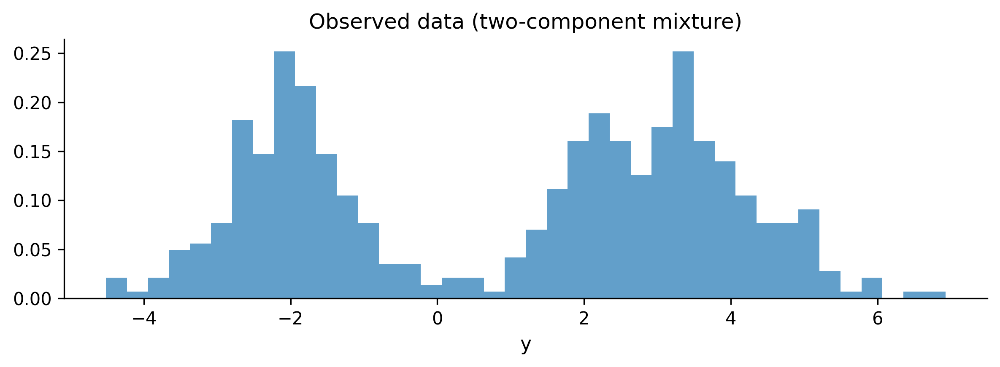
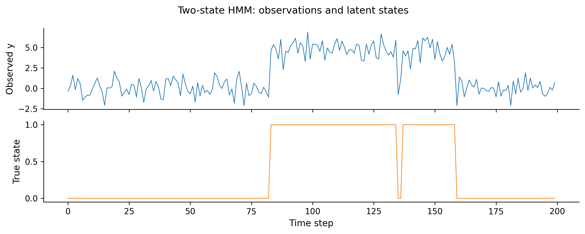

You have made it to the final chapter. If you have been working through this book from the beginning, you can build models, diagnose them, interpret them, and apply them to real problems. That puts you ahead of most people who say “I use Bayesian statistics.”
But there are situations where the techniques from previous chapters hit a wall. Your dataset has a million rows and MCMC takes three days. None of PyMC’s built-in distributions match the process you are modeling. Your data has discrete latent states that change over time. This chapter is about what to do when the standard toolkit is not enough.
We will cover variational inference (a fast alternative to MCMC), custom distributions, the PyTensor computation backend, mixture models, hidden Markov models, and a brief look at Bayesian neural networks. We will close by surveying the PyMC ecosystem and pointing you toward resources for continued learning.
This is a tour, not a deep dive. Each of these topics could fill its own book. The goal is to show you what is possible, give you working code, and help you decide which rabbit holes are worth exploring for your own work.
Imports and setup
import pymc as pmimport arviz as azimport numpy as npimport pandas as pdimport matplotlib.pyplot as pltfrom numpy.random import default_rngplt.style.use('assets/book.mplstyle')rng = default_rng(42)print(f"PyMC {pm.__version__}, ArviZ {az.__version__}")
PyMC 5.25.1, ArviZ 0.23.4
11.1 When MCMC Is Too Slow
Every model we have built so far used MCMC—specifically, the NUTS sampler. NUTS is the gold standard for Bayesian inference. It explores the posterior distribution by simulating a physical system (Hamiltonian dynamics), and under mild conditions, its samples converge to the true posterior. That is a remarkable guarantee.
But guarantees cost something. For every sample NUTS draws, it must evaluate the log-probability of the entire dataset and compute gradients through the full model graph. When you have ten thousand rows and five parameters, that is fast. When you have a million rows, a hundred parameters, and a hierarchical structure with three levels of nesting, each sample can take seconds. Multiply by the four thousand samples you need for reliable inference, and you are looking at hours or days.
Here are common scenarios where MCMC becomes a bottleneck:
Large datasets. MCMC evaluates the full likelihood at every step. A logistic regression with a million rows is trivial for scikit-learn’s optimizer, but a Bayesian version with NUTS will be orders of magnitude slower because it needs thousands of full passes through the data.
Complex hierarchical models. Models with many group levels, crossed random effects, or deep hierarchies create high-dimensional parameter spaces. The geometry of these spaces can be challenging for NUTS—the sampler slows down, divergences appear, and you spend more time reparameterizing than modeling.
Real-time or interactive applications. If you need posterior estimates in seconds—for an A/B testing dashboard, a recommendation system, or an online learning pipeline—waiting twenty minutes for MCMC to finish is not an option.
Exploration and prototyping. When you are iterating on model structure, trying different priors, or comparing ten candidate models, the feedback loop matters. If every model takes an hour to fit, you will try three models instead of thirty.
None of these problems mean MCMC is wrong. They mean it is expensive. And when the cost of exact inference is too high, you need an approximation that trades some accuracy for speed. That is where variational inference comes in.
11.2 Variational Inference
11.2.1 The core idea
MCMC approximates the posterior by drawing samples from it. Variational inference (VI) takes a completely different approach: it approximates the posterior by finding a simpler distribution that is as close to the true posterior as possible.
Think of it this way. The true posterior is some complicated, high-dimensional shape. VI says: “I am going to pick a family of simple distributions—say, factored Gaussians—and then search within that family for the one that best matches the true posterior.” Instead of sampling, you are optimizing.
11.2.2 KL divergence and the ELBO
How do you measure “closeness” between two distributions? VI uses the Kullback-Leibler (KL) divergence:
where \(q(\theta)\) is the approximating distribution and \(p(\theta \mid y)\) is the true posterior. The KL divergence is zero when \(q\) matches \(p\) exactly, and positive otherwise. The goal is to find the \(q\) that minimizes this quantity.
There is one problem: computing \(\text{KL}(q \| p)\) directly requires knowing the true posterior—which is the thing we cannot compute. But through a bit of algebra, minimizing the KL divergence turns out to be equivalent to maximizing a different quantity called the evidence lower bound (ELBO):
The ELBO depends only on the joint distribution \(p(y, \theta)\) (which we can compute) and the approximating distribution \(q\) (which we chose). No intractable normalizing constants. We can maximize the ELBO using gradient ascent, just like training a neural network.
11.2.3 ADVI in PyMC
PyMC implements Automatic Differentiation Variational Inference (ADVI), which automates the whole process. ADVI transforms all parameters to unconstrained space (so a standard deviation that must be positive becomes a real-valued number after a log transform), then fits a Gaussian approximation in that transformed space. You do not need to derive anything by hand.
The interface is a single function: pm.fit().
Let’s see it in action. We will build a simple model and compare the posterior from MCMC to the one from VI.
# Generate data from a known processtrue_mu =5.0true_sigma =2.0n_obs =500y_obs = rng.normal(loc=true_mu, scale=true_sigma, size=n_obs)print(f"Sample mean: {y_obs.mean():.2f}")print(f"Sample std: {y_obs.std():.2f}")
Sample mean: 4.97
Sample std: 1.92
# Build a simple Normal modelwith pm.Model() as normal_model: mu = pm.Normal("mu", mu=0, sigma=10) sigma = pm.HalfNormal("sigma", sigma=10) likelihood = pm.Normal("y", mu=mu, sigma=sigma, observed=y_obs, )
First, fit with MCMC (our reference):
with normal_model: trace_mcmc = pm.sample( draws=2000, tune=1000, random_seed=42, progressbar=False, )
The pm.fit() call runs ADVI for 30,000 optimization steps. It returns an Approximation object, and .sample() draws samples from the fitted variational distribution so we can use the same ArviZ diagnostics we are used to.
For this simple model, the two posteriors should look very similar. ADVI finds a Gaussian approximation, and for a model where the true posterior is approximately Gaussian, that works well. The real difference shows up in computation time—ADVI typically finishes in a fraction of the time MCMC takes.
11.2.4 Monitoring convergence
One advantage of VI over MCMC is that convergence is easy to diagnose. Since we are optimizing the ELBO, we can plot it over iterations and look for a plateau:
If the ELBO is still climbing when the optimization stops, increase n. If it plateaus early, you can decrease n to save time.
11.3 When to Use VI vs MCMC
Variational inference is not a replacement for MCMC. It is a complement. Each method has situations where it shines.
Use VI when:
You are prototyping and need fast iteration. Run VI in thirty seconds to check that your model structure makes sense, then switch to MCMC for the final fit.
Your dataset is large (hundreds of thousands of rows or more) and MCMC is impractically slow.
You need approximate posteriors in a production pipeline where latency matters.
You are comparing many candidate models and need a quick way to assess relative fit.
Use MCMC when:
You need accurate uncertainty quantification. VI tends to underestimate posterior variance—it produces posteriors that are too narrow. If your credible intervals matter (and in most Bayesian analyses they do), this is a problem.
Your model has strong correlations between parameters. Mean-field ADVI assumes all parameters are independent in the variational family. If two parameters are highly correlated in the true posterior, ADVI will miss that structure.
You have a moderately complex model but a manageable dataset. This is the sweet spot for NUTS.
You are making decisions based on the tails of the posterior (e.g., “What is the probability that this effect is negative?”). VI is weakest in the tails.
11.3.1 Seeing the accuracy gap
Let’s demonstrate the underestimation problem on a hierarchical model, where parameter correlations are strong and the posterior geometry is more complex.
Look at the standard deviations in the legend. The VI posteriors will almost always be narrower than the MCMC posteriors. For sigma_pop in particular—a parameter that is hard to pin down with small groups—VI may significantly understate the uncertainty.
The practical rule: Use VI for speed during exploration. Use MCMC for your final, reportable results. If VI and MCMC give you substantially different answers, trust MCMC.
Austin Rochford and Daniel Coyle, in their PyData talks on variational inference, offer a complementary perspective: ADVI is “good enough” when your goal is relative model comparison (which of five models fits best?), fast prototyping (does this model structure capture the signal at all?), or warm-starting MCMC (use VI’s optimum as initialization for NUTS). Where you need MCMC is when the decision depends on tail probabilities (“what is the chance of ruin?”), when you need calibrated credible intervals for regulatory or stakeholder reporting, or when the model has strong funnel geometry that mean-field VI cannot represent. In short: VI answers “is this roughly right?” while MCMC answers “how right, exactly?”
11.4 Custom Distributions
PyMC ships with dozens of built-in distributions—Normal, Beta, Poisson, StudentT, and many more. But sometimes the data-generating process you are modeling does not match any of them.
A classic example: count data where there are “too many” zeros. Imagine tracking the number of customer complaints per day. Most days you get zero complaints—not because the rate is low, but because on some days the system simply does not generate any complaints at all (weekends, holidays, maintenance windows). This is a zero-inflated process: a mixture of “always zero” and “Poisson count.”
PyMC has a built-in pm.ZeroInflatedPoisson, but let’s build one from scratch using pm.CustomDist to see how custom distributions work.
11.4.1 Building a zero-inflated Poisson from scratch
A zero-inflated Poisson has two parameters:
\(\psi\): the probability that an observation is from the “always zero” component
\(\lambda\): the rate parameter of the Poisson component
To use pm.CustomDist, we need to write a function that computes the log-probability:
import pytensor.tensor as ptdef zip_logp(value, psi, lam):"""Log-probability for a zero-inflated Poisson."""# Log-prob for the Poisson component logp_poisson = pm.logp(pm.Poisson.dist(mu=lam), value)# When value == 0: log(psi + (1-psi) * exp(-lam)) logp_zero = pt.log( psi + (1- psi) * pt.exp(-lam) )# When value > 0: log(1-psi) + Poisson logp logp_nonzero = pt.log(1- psi) + logp_poissonreturn pt.switch( pt.eq(value, 0), logp_zero, logp_nonzero, )
The function takes the observed value and the distribution parameters (psi, lam), and returns the log-probability using PyTensor operations. The pt.switch acts like an if-else that works on tensors.
Now let’s generate some zero-inflated data and fit the model:
The pm.CustomDist interface is straightforward: you provide the parameters, a logp function, and the observed data. PyMC handles the rest—gradient computation (via PyTensor’s automatic differentiation), NUTS sampling, and all the diagnostics.
You can also provide a random function if you want to sample from the prior predictive distribution, but logp is the minimum requirement for fitting.
11.4.2 When to use CustomDist
You have a domain-specific likelihood that is not in PyMC’s library (truncated distributions, custom censoring schemes, specialized count models).
You want to implement a distribution from a paper before it gets added to PyMC.
You are combining standard distributions in a non-standard way and pm.Potential is too low-level.
11.5 PyTensor (Formerly Aesara)
Every time you write pm.Normal("x", mu=0, sigma=1), PyMC does not immediately compute anything. Instead, it builds a computational graph—a symbolic representation of the calculations needed to evaluate the model’s log-probability.
That graph is managed by PyTensor, the tensor computation library that powers PyMC. PyTensor was born as Theano (one of the original deep learning frameworks), was forked as Aesara when Theano was discontinued, and was renamed to PyTensor when the PyMC team took over its development. The lineage matters because a lot of existing PyMC documentation still references Theano or Aesara.
11.5.1 What PyTensor does for you
Symbolic computation. Variables like pt.scalar("x") are placeholders, not numbers. You build expressions with them, and PyTensor compiles those expressions into efficient code.
Automatic differentiation. PyTensor can differentiate any expression in the graph with respect to any input. This is what makes NUTS and ADVI possible—both need gradients of the log-probability.
Graph optimization. Before compilation, PyTensor rewrites the graph for numerical stability and speed. For example, log(1 - exp(x)) is automatically replaced with a specialized log1mexp operation that avoids catastrophic cancellation. As Bill Engels (PyMC developer) puts it: “PyTensor’s graph rewrites are magical and underappreciated”—users write math naturally, and the backend silently replaces Cholesky inversions with more stable decompositions, eliminates redundant matrix multiplications, and fuses element-wise operations.
Multiple backends. The same graph can be compiled to C code (the default), Numba (for JIT compilation), or JAX (for GPU support). You switch backends by changing a configuration flag.
11.5.2 A quick example
import pytensorimport pytensor.tensor as pt# Build a symbolic expressionx = pt.scalar("x")y = pt.log(1+ pt.exp(x)) # softplus function# Compute the gradient symbolicallydy_dx = pytensor.gradient.grad(y, x)# Compile to a callable functionsoftplus_fn = pytensor.function([x], [y, dy_dx])# Evaluateval, grad = softplus_fn(2.0)print(f"softplus(2.0) = {val:.4f}")print(f"d/dx softplus(2.0) = {grad:.4f} (sigmoid)")
The gradient of the softplus is the sigmoid function—and PyTensor figured that out automatically. This is the same machinery that PyMC uses behind the scenes when NUTS needs the gradient of your model’s log-probability.
11.5.3 When you need to care about PyTensor
Most of the time, you don’t. PyMC’s high-level API hides PyTensor entirely. But there are situations where knowing the basics helps:
Custom distributions. As we saw above, logp functions are written with pt (PyTensor tensor) operations.
Debugging slow models. If your model is unexpectedly slow, inspecting the compiled graph can reveal unnecessary computation.
Custom transformations. If you need a parameter transform that PyMC does not provide, you write it with PyTensor ops.
Switching backends. Running on a GPU with JAX requires setting pytensor.config.device and ensuring your custom ops are JAX-compatible.
For most modeling work, treat PyTensor as an implementation detail. When you need to reach below PyMC’s API, it will be there.
11.6 Mixture Models
Sometimes your data comes from more than one generating process. Customer spending might follow one pattern for regular shoppers and a different pattern for bargain hunters. Sensor readings might include a “normal operation” mode and a “faulty sensor” mode. These situations call for mixture models.
11.6.1 Gaussian mixtures in PyMC
A Gaussian mixture model says: each observation was drawn from one of \(K\) Normal distributions, and we do not know which one. We need to infer the means, standard deviations, and mixing proportions.
# Generate data from a two-component mixturetrue_weights = np.array([0.4, 0.6])true_means = np.array([-2.0, 3.0])true_sds = np.array([0.8, 1.2])n_mix =500components = rng.choice(2, size=n_mix, p=true_weights)y_mix = rng.normal( loc=true_means[components], scale=true_sds[components],)fig, ax = plt.subplots(figsize=(8, 3))ax.hist(y_mix, bins=40, density=True, alpha=0.7)ax.set_xlabel("y")ax.set_title("Observed data (two-component mixture)")plt.tight_layout()plt.show()

K =2# number of componentswith pm.Model() as gmm:# Mixing weights w = pm.Dirichlet("w", a=np.ones(K))# Component parameters mu = pm.Normal("mu", mu=0, sigma=5, shape=K, ) sigma = pm.HalfNormal("sigma", sigma=3, shape=K)# Likelihood: a mixture of Normals pm.NormalMixture("y", w=w, mu=mu, sigma=sigma, observed=y_mix, ) trace_gmm = pm.sample( draws=2000, tune=2000, random_seed=42, target_accept=0.9, progressbar=False, )
11.6.2 Label switching
There is a classic trap with mixture models: label switching. If you swap the labels of component 1 and component 2 (swap the means, the variances, and the weights), the likelihood does not change. The posterior has a symmetry that the sampler can exploit, jumping between equivalent modes and producing a mess.
You will know label switching happened when the trace plots for component means show the chains swapping values, or when the posterior means are both near the grand mean instead of at the true component locations.
Common fixes:
Ordering constraint. Force mu[0] < mu[1] using pm.Potential or an ordered transform. This breaks the symmetry.
Initialization. Start the sampler near the true modes (e.g., using k-means).
If label switching did not occur, you should see the two component means near \(-2\) and \(3\). If they look scrambled, add an ordering constraint and refit.
11.7 Hidden Markov Models
Some data has sequential structure: observations arrive in order, and the underlying state changes over time. A machine alternates between “healthy” and “degraded” modes. A stock market switches between “bull” and “bear” regimes. The customer’s engagement level shifts from “active” to “churning.”
A hidden Markov model (HMM) captures this with three ingredients:
A set of hidden states (\(S_1, S_2, \ldots\)) that evolve as a Markov chain.
A transition matrix \(A\) that governs how states change.
An emission distribution—the observation you see depends on the current hidden state.
11.7.1 The challenge: discrete latent variables
NUTS cannot sample discrete variables (it needs gradients, and you cannot differentiate through a discrete choice). The standard trick is marginalization: sum over all possible state sequences analytically, so only continuous parameters remain.
For a two-state HMM, the marginalization can be done with the forward algorithm. PyMC does not have a built-in HMM distribution (yet), but we can use pm.Potential with a custom forward-algorithm implementation.
Here is a compact version for a two-state Gaussian HMM:
# Simulate a two-state HMMn_time =200true_transition = np.array([ [0.95, 0.05], # state 0 → state 0/1 [0.10, 0.90], # state 1 → state 0/1])true_emission_mu = np.array([0.0, 5.0])true_emission_sd = np.array([1.0, 1.0])states = np.zeros(n_time, dtype=int)for t inrange(1, n_time): states[t] = rng.choice(2, p=true_transition[states[t -1]], )y_hmm = rng.normal( loc=true_emission_mu[states], scale=true_emission_sd[states],)fig, axes = plt.subplots(2, 1, figsize=(10, 4), sharex=True)axes[0].plot(y_hmm, linewidth=0.8)axes[0].set_ylabel("Observed y")axes[1].plot(states, linewidth=0.8, color="C1")axes[1].set_ylabel("True state")axes[1].set_xlabel("Time step")plt.suptitle("Two-state HMM: observations and latent states")plt.tight_layout()plt.show()

def hmm_logp(y_vals, mu0, mu1, sd, p_trans):""" Log-likelihood of a two-state Gaussian HMM via the forward algorithm. Parameters ---------- y_vals : array Observed time series. mu0, mu1 : scalar Emission means for states 0 and 1. sd : scalar Shared emission standard deviation. p_trans : 2x2 tensor Transition probability matrix. """# Emission log-probabilities at each time step logp0 = pm.logp( pm.Normal.dist(mu=mu0, sigma=sd), y_vals ) logp1 = pm.logp( pm.Normal.dist(mu=mu1, sigma=sd), y_vals )# Initial state: uniform log_alpha = pt.stack([ pt.log(pt.constant(0.5)) + logp0[0], pt.log(pt.constant(0.5)) + logp1[0], ]) log_trans = pt.log(p_trans)def forward_step( logp0_t, logp1_t, log_alpha_prev, log_t ):"""One step of the forward algorithm."""# For each current state, sum over previous log_alpha_0 = pt.logsumexp( log_alpha_prev + log_t[:, 0] ) + logp0_t log_alpha_1 = pt.logsumexp( log_alpha_prev + log_t[:, 1] ) + logp1_treturn pt.stack([log_alpha_0, log_alpha_1])# Scan over time steps 1..T (pass log_trans# as non_sequences so gradients work) log_alphas, _ = pytensor.scan( fn=forward_step, sequences=[logp0[1:], logp1[1:]], outputs_info=log_alpha, non_sequences=[log_trans], )# Total log-likelihood: logsumexp of final alphareturn pt.logsumexp(log_alphas[-1])
The forward algorithm marginalizes out the discrete state sequence, leaving NUTS to work with continuous parameters only. This is a general pattern: whenever you have a small number of discrete latent states, marginalizing them out is usually more efficient than trying to sample them.
Libraries for HMMs
If you need HMMs regularly, look at dynamax (JAX-based) or hmmlearn (scikit-learn API). For Bayesian HMMs within PyMC, the marginalization approach shown here is the standard pattern.
11.8 Bayesian Neural Networks
This section comes with a disclaimer: Bayesian neural networks (BNNs) are not a practical replacement for standard deep learning. Training is much slower, scaling is harder, and for most prediction tasks, a well-tuned deterministic neural network will outperform a BNN. So why mention them at all?
Because BNNs answer a question that standard neural networks cannot: “How uncertain is this prediction?” When you put priors on network weights, the posterior gives you a distribution over predictions, not a single point. That matters in medical diagnosis, autonomous driving, active learning, and anywhere else where knowing what you don’t know is as important as the prediction itself.
11.8.1 The idea
A standard neural network has fixed weights found by optimization. A BNN puts a prior on every weight and infers a posterior. For a network with \(W\) weights, you now have a \(W\)-dimensional posterior to explore. This is where things get hard:
High dimensionality. Even a small network with 100 hidden units and one hidden layer has thousands of weights.
Multimodality. Neural network loss surfaces have many local optima. The posterior inherits this structure.
Cost. MCMC with thousands of parameters is slow. VI is the more practical choice here, using mini-batch stochastic variational inference.
11.8.2 A small example
Let’s fit a BNN to a nonlinear regression problem:
Notice how the uncertainty fans out away from the training data. In the region \([-3, 3]\) where we have observations, the BNN is confident. Outside that range, the prediction intervals widen. A standard neural network would give you a single line with no indication of where it is extrapolating.
This is the value proposition of BNNs: calibrated uncertainty, not better predictions. Use them when knowing “I don’t know” is worth the extra computational cost.
11.9 The PyMC Ecosystem
PyMC is the core, but it sits at the center of a growing ecosystem of libraries that build on it. In his “State of the Art” talks at PyData conferences, Wiecki describes the evolution of PyMC as a progression from a single sampling library (PyMC2, pure Python) to a full probabilistic programming platform (PyMC 5+, with PyTensor as the computation engine, multiple backends, and an ecosystem of domain-specific packages built on top).
The JAX backend is central to this vision. JAX gives PyMC access to GPU/TPU hardware, XLA compilation, and efficient vectorized sampling—which means business-scale models with tens of thousands of parameters (hierarchical marketing mix models, large GPs) can sample in minutes rather than hours. Wiecki frames this as the transition from “toy models in notebooks” to “production inference at company scale.”
A key piece of the roadmap is automated reparameterization. Brendan Willard’s Symbolic Piracy project aims to detect problematic posterior geometry (the “funnel of doom” from hierarchical models) and automatically apply non-centered parameterization at the graph level—no manual intervention required. As Wiecki notes: “Most of the problem with Bayesian stats today is all these re-parameterization tricks.” If Symbolic Piracy succeeds, the user writes the natural model and PyTensor rewrites it into a sampler-friendly form transparently.
Here are the ecosystem libraries worth knowing about.
11.9.1 Bambi: formula-based models
If you are coming from R and miss the y ~ x1 + x2 + (1|group) formula syntax, Bambi is for you. It provides a high-level interface to PyMC that lets you specify generalized linear and mixed-effects models with a formula string:
Bambi handles the translation to PyMC under the hood, choosing reasonable default priors and link functions. It is excellent for regression-type problems where you do not need full control over the model specification.
11.9.2 CausalPy: causal inference
CausalPy implements Bayesian versions of common causal inference methods: difference-in-differences, synthetic control, regression discontinuity, and interrupted time series. If you worked through Chapter 9, CausalPy is where you go to apply those ideas with less boilerplate.
11.9.3 pymc-marketing: marketing mix models
pymc-marketing provides pre-built models for marketing analytics: media mix modeling (MMM), customer lifetime value (CLV), and attribution. It uses the adstock and saturation transforms that marketing scientists need, all within a Bayesian framework.
11.9.4 nutpie: fast sampling
nutpie is a NUTS sampler written in Rust that can be used as a drop-in replacement for PyMC’s default sampler. It is often 2–5x faster, especially on models with many parameters:
with model: trace = pm.sample(nuts_sampler="nutpie")
That single keyword argument switches the backend. If your models are slow and you have already optimized the model structure, try nutpie before reaching for variational inference.
11.9.5 BlackJAX and NumPyro
For users who need GPU acceleration, BlackJAX (a JAX-based MCMC library) and NumPyro (a JAX-based probabilistic programming language) offer high-performance alternatives. PyMC can compile its models to JAX via PyTensor, bridging the two worlds.
11.10 Next Steps and Resources
This book gave you a foundation. Here is where to go next.
11.10.1 Books
Bayesian Data Analysis, 3rd edition (Gelman et al.)—the reference text. Dense, mathematical, and comprehensive. Read the parts you need rather than cover to cover.
Statistical Rethinking (McElreath)—the best pedagogical treatment of Bayesian modeling. Written for scientists, not statisticians. The accompanying lecture videos are outstanding.
Bayesian Modeling and Computation in Python (Martin, Kumar, Lao)—the closest thing to “this book, but longer.” Written by PyMC core developers.
Regression and Other Stories (Gelman, Hill, Vehtari)—focuses on regression modeling with Bayesian and frequentist perspectives. Practical and well-written.
11.10.2 Online courses and materials
Statistical Rethinking lectures (YouTube)—Richard McElreath’s full course, freely available.
Intuitive Bayes (intuitivebayes.com)—created by PyMC Labs, focused on intuitions over formalism.
PyMC examples gallery (pymc.io)—dozens of worked examples covering everything from basic regression to Gaussian processes.
11.10.3 The PyMC community
PyMC Discourse (discourse.pymc.io)—the best place to ask questions. The core developers are active and helpful.
GitHub (github.com/pymc-devs/pymc)—for bug reports, feature requests, and contributing.
PyMC Labs blog (pymc-labs.io)—case studies and technical posts from the team.
11.10.4 How to contribute
The PyMC project is open source and always looking for contributors. You do not need to write sampler code—documentation, examples, bug reports, and even answering questions on Discourse are all valuable contributions. The CONTRIBUTING.md file in the PyMC repository has the details.
11.11 Exercises
Exercise 1: VI convergence. Build a Bayesian logistic regression model with 5 predictors and 5,000 observations. Fit it with both MCMC and ADVI. Compare: (a) wall-clock time, (b) posterior means, (c) posterior standard deviations. How much faster is ADVI? How much narrower are its posteriors?
You should see ADVI is several times faster. The means will be close, but the sd_ratio column will show VI standard deviations are 70–90% of the MCMC ones—evidence of the variance underestimation we discussed.
Exercise 2: Custom distribution. Implement a zero-inflated Negative Binomial distribution using pm.CustomDist. The negative binomial adds an overdispersion parameter \(\alpha\) compared to the Poisson. Generate synthetic data with \(\psi = 0.2\), \(\mu = 5\), \(\alpha = 2\), fit the model, and verify you recover the true parameters.
Exercise 3: Mixture model with ordering constraint. Refit the Gaussian mixture model from the chapter, but add an ordering constraint (mu[0] < mu[1]) to prevent label switching. Use pm.Potential with a large negative penalty when the constraint is violated. Compare the trace plots with and without the constraint.
With the ordering constraint, the trace plots for mu[0] and mu[1] should stay cleanly separated. Without it, you may see the chains occasionally swap. The summaries should show mu[0] near \(-2\) and mu[1] near \(3\), matching our true values.
Exercise 4: Full-rank ADVI. ADVI’s default "advi" method uses a mean-field (diagonal) Gaussian approximation, which misses correlations. PyMC also supports "fullrank_advi", which uses a full covariance matrix. Refit the hierarchical model from the “When to Use VI vs MCMC” section with both methods and compare the posterior for sigma_pop. Does full-rank ADVI reduce the underestimation gap?
Full-rank ADVI should produce a sigma_pop posterior that is wider than mean-field, closer to the MCMC result. It is slower than mean-field (because it optimizes \(O(d^2)\) parameters instead of \(O(d)\)) but captures correlations between parameters. For models where parameter correlations matter, full-rank is worth the extra cost.
Source Code
---title: "Advanced Topics: Variational Inference, Custom Models, and Beyond"---You have made it to the final chapter. If you have been working throughthis book from the beginning, you can build models, diagnose them,interpret them, and apply them to real problems. That puts you aheadof most people who say "I use Bayesian statistics."But there are situations where the techniques from previous chaptershit a wall. Your dataset has a million rows and MCMC takes threedays. None of PyMC's built-in distributions match the process youare modeling. Your data has discrete latent states that change overtime. This chapter is about what to do when the standard toolkitis not enough.We will cover variational inference (a fast alternative to MCMC),custom distributions, the PyTensor computation backend, mixturemodels, hidden Markov models, and a brief look at Bayesian neuralnetworks. We will close by surveying the PyMC ecosystem andpointing you toward resources for continued learning.This is a tour, not a deep dive. Each of these topics could fill itsown book. The goal is to show you what is possible, give you workingcode, and help you decide which rabbit holes are worth exploring foryour own work.```{python}#| label: setup#| code-fold: true#| code-summary: "Imports and setup"import pymc as pmimport arviz as azimport numpy as npimport pandas as pdimport matplotlib.pyplot as pltfrom numpy.random import default_rngplt.style.use('assets/book.mplstyle')rng = default_rng(42)print(f"PyMC {pm.__version__}, ArviZ {az.__version__}")```## When MCMC Is Too SlowEvery model we have built so far used MCMC---specifically, the NUTSsampler. NUTS is the gold standard for Bayesian inference. Itexplores the posterior distribution by simulating a physical system(Hamiltonian dynamics), and under mild conditions, its samplesconverge to the true posterior. That is a remarkable guarantee.But guarantees cost something. For every sample NUTS draws, it mustevaluate the log-probability of the entire dataset and computegradients through the full model graph. When you have ten thousandrows and five parameters, that is fast. When you have a million rows,a hundred parameters, and a hierarchical structure with three levelsof nesting, each sample can take seconds. Multiply by the fourthousand samples you need for reliable inference, and you are lookingat hours or days.Here are common scenarios where MCMC becomes a bottleneck:**Large datasets.** MCMC evaluates the full likelihood at every step.A logistic regression with a million rows is trivial forscikit-learn's optimizer, but a Bayesian version with NUTS will beorders of magnitude slower because it needs thousands of full passesthrough the data.**Complex hierarchical models.** Models with many group levels,crossed random effects, or deep hierarchies create high-dimensionalparameter spaces. The geometry of these spaces can be challenging forNUTS---the sampler slows down, divergences appear, and you spendmore time reparameterizing than modeling.**Real-time or interactive applications.** If you need posteriorestimates in seconds---for an A/B testing dashboard, a recommendationsystem, or an online learning pipeline---waiting twenty minutes forMCMC to finish is not an option.**Exploration and prototyping.** When you are iterating on modelstructure, trying different priors, or comparing ten candidate models,the feedback loop matters. If every model takes an hour to fit, youwill try three models instead of thirty.None of these problems mean MCMC is wrong. They mean it is expensive.And when the cost of exact inference is too high, you need anapproximation that trades some accuracy for speed. That is wherevariational inference comes in.## Variational Inference### The core ideaMCMC approximates the posterior by drawing samples from it.Variational inference (VI) takes a completely different approach:it approximates the posterior by finding a *simpler distribution*that is as close to the true posterior as possible.Think of it this way. The true posterior is some complicated,high-dimensional shape. VI says: "I am going to pick a family ofsimple distributions---say, factored Gaussians---and then searchwithin that family for the one that best matches the true posterior."Instead of sampling, you are optimizing.### KL divergence and the ELBOHow do you measure "closeness" between two distributions? VI usesthe Kullback-Leibler (KL) divergence:$$\text{KL}(q \| p) = \int q(\theta) \log \frac{q(\theta)}{p(\theta \mid y)} \, d\theta$$where $q(\theta)$ is the approximating distribution and$p(\theta \mid y)$ is the true posterior. The KL divergence is zerowhen $q$ matches $p$ exactly, and positive otherwise. The goal isto find the $q$ that minimizes this quantity.There is one problem: computing $\text{KL}(q \| p)$ directlyrequires knowing the true posterior---which is the thing we cannotcompute. But through a bit of algebra, minimizing the KL divergenceturns out to be equivalent to maximizing a different quantity calledthe **evidence lower bound** (ELBO):$$\text{ELBO}(q) = \mathbb{E}_q[\log p(y, \theta)] - \mathbb{E}_q[\log q(\theta)]$$The ELBO depends only on the joint distribution $p(y, \theta)$(which we can compute) and the approximating distribution $q$(which we chose). No intractable normalizing constants. We canmaximize the ELBO using gradient ascent, just like training aneural network.### ADVI in PyMCPyMC implements **Automatic Differentiation Variational Inference**(ADVI), which automates the whole process. ADVI transforms allparameters to unconstrained space (so a standard deviation thatmust be positive becomes a real-valued number after a logtransform), then fits a Gaussian approximation in that transformedspace. You do not need to derive anything by hand.The interface is a single function: `pm.fit()`.Let's see it in action. We will build a simple model and compare theposterior from MCMC to the one from VI.```{python}#| label: vi-comparison-data# Generate data from a known processtrue_mu =5.0true_sigma =2.0n_obs =500y_obs = rng.normal(loc=true_mu, scale=true_sigma, size=n_obs)print(f"Sample mean: {y_obs.mean():.2f}")print(f"Sample std: {y_obs.std():.2f}")``````{python}#| label: vi-model# Build a simple Normal modelwith pm.Model() as normal_model: mu = pm.Normal("mu", mu=0, sigma=10) sigma = pm.HalfNormal("sigma", sigma=10) likelihood = pm.Normal("y", mu=mu, sigma=sigma, observed=y_obs, )```First, fit with MCMC (our reference):```{python}#| label: vi-mcmc-fitwith normal_model: trace_mcmc = pm.sample( draws=2000, tune=1000, random_seed=42, progressbar=False, )```Now, fit with variational inference:```{python}#| label: vi-fitwith normal_model: approx = pm.fit( n=30_000, method="advi", random_seed=42, progressbar=False, ) trace_vi = approx.sample(draws=2000)```The `pm.fit()` call runs ADVI for 30,000 optimization steps. Itreturns an `Approximation` object, and `.sample()` draws samplesfrom the fitted variational distribution so we can use the sameArviZ diagnostics we are used to.Let's compare the two:```{python}#| label: vi-comparison-plotfig, axes = plt.subplots(1, 2, figsize=(10, 4))for i, var_name inenumerate(["mu", "sigma"]): ax = axes[i]# MCMC posterior mcmc_samples = ( trace_mcmc.posterior[var_name] .values.flatten() ) ax.hist( mcmc_samples, bins=50, density=True, alpha=0.5, label="MCMC (NUTS)", )# VI posterior vi_samples = ( trace_vi.posterior[var_name] .values.flatten() ) ax.hist( vi_samples, bins=50, density=True, alpha=0.5, label="VI (ADVI)", ) ax.axvline( x=true_mu if var_name =="mu"else true_sigma, color="black", linestyle="--", label="True value", ) ax.set_title(var_name) ax.legend(fontsize=8)plt.suptitle("MCMC vs Variational Inference")plt.tight_layout()plt.show()```For this simple model, the two posteriors should look very similar.ADVI finds a Gaussian approximation, and for a model where the trueposterior is approximately Gaussian, that works well. The realdifference shows up in computation time---ADVI typically finishesin a fraction of the time MCMC takes.### Monitoring convergenceOne advantage of VI over MCMC is that convergence is easy todiagnose. Since we are optimizing the ELBO, we can plot it overiterations and look for a plateau:```{python}#| label: elbo-plotfig, ax = plt.subplots(figsize=(8, 3))# approx.hist contains the ELBO historyelbo_vals =-approx.hist # negative because pm stores -ELBOax.plot(elbo_vals, alpha=0.6, linewidth=0.5)ax.set_xlabel("Iteration")ax.set_ylabel("ELBO (negative loss)")ax.set_title("ADVI convergence")plt.tight_layout()plt.show()```If the ELBO is still climbing when the optimization stops, increase`n`. If it plateaus early, you can decrease `n` to save time.## When to Use VI vs MCMCVariational inference is not a replacement for MCMC. It is acomplement. Each method has situations where it shines.**Use VI when:**- You are prototyping and need fast iteration. Run VI in thirty seconds to check that your model structure makes sense, then switch to MCMC for the final fit.- Your dataset is large (hundreds of thousands of rows or more) and MCMC is impractically slow.- You need approximate posteriors in a production pipeline where latency matters.- You are comparing many candidate models and need a quick way to assess relative fit.**Use MCMC when:**- You need accurate uncertainty quantification. VI tends to *underestimate* posterior variance---it produces posteriors that are too narrow. If your credible intervals matter (and in most Bayesian analyses they do), this is a problem.- Your model has strong correlations between parameters. Mean-field ADVI assumes all parameters are independent in the variational family. If two parameters are highly correlated in the true posterior, ADVI will miss that structure.- You have a moderately complex model but a manageable dataset. This is the sweet spot for NUTS.- You are making decisions based on the tails of the posterior (e.g., "What is the probability that this effect is negative?"). VI is weakest in the tails.### Seeing the accuracy gapLet's demonstrate the underestimation problem on a hierarchicalmodel, where parameter correlations are strong and the posteriorgeometry is more complex.```{python}#| label: vi-vs-mcmc-hierarchical# Simulate grouped datan_groups =8n_per_group =30group_idx = np.repeat(np.arange(n_groups), n_per_group)true_group_means = rng.normal(loc=3.0, scale=1.5, size=n_groups)y_grouped = rng.normal( loc=true_group_means[group_idx], scale=1.0,)with pm.Model() as hierarchical_model:# Hyperpriors mu_pop = pm.Normal("mu_pop", mu=0, sigma=5) sigma_pop = pm.HalfNormal("sigma_pop", sigma=3)# Group-level effects (non-centered) z = pm.Normal("z", mu=0, sigma=1, shape=n_groups) mu_group = pm.Deterministic("mu_group", mu_pop + sigma_pop * z, ) sigma_obs = pm.HalfNormal("sigma_obs", sigma=3) pm.Normal("y", mu=mu_group[group_idx], sigma=sigma_obs, observed=y_grouped, )``````{python}#| label: vi-vs-mcmc-hierarchical-fitwith hierarchical_model: trace_hier_mcmc = pm.sample( draws=2000, tune=1000, random_seed=42, progressbar=False, ) approx_hier = pm.fit( n=50_000, method="advi", random_seed=42, progressbar=False, ) trace_hier_vi = approx_hier.sample(draws=2000)``````{python}#| label: vi-vs-mcmc-hierarchical-comparefig, axes = plt.subplots(1, 2, figsize=(10, 4))for i, var_name inenumerate(["mu_pop", "sigma_pop"]): ax = axes[i] mcmc_vals = ( trace_hier_mcmc.posterior[var_name] .values.flatten() ) vi_vals = ( trace_hier_vi.posterior[var_name] .values.flatten() ) ax.hist( mcmc_vals, bins=50, density=True, alpha=0.5, label=f"MCMC (sd={mcmc_vals.std():.3f})", ) ax.hist( vi_vals, bins=50, density=True, alpha=0.5, label=f"VI (sd={vi_vals.std():.3f})", ) ax.set_title(var_name) ax.legend(fontsize=8)plt.suptitle("Hierarchical model: MCMC vs VI\n""(VI posteriors are typically narrower)")plt.tight_layout()plt.show()```Look at the standard deviations in the legend. The VI posteriorswill almost always be narrower than the MCMC posteriors. For`sigma_pop` in particular---a parameter that is hard to pin downwith small groups---VI may significantly understate the uncertainty.**The practical rule:** Use VI for speed during exploration. UseMCMC for your final, reportable results. If VI and MCMC give yousubstantially different answers, trust MCMC.Austin Rochford and Daniel Coyle, in their PyData talks onvariational inference, offer a complementary perspective: ADVI is"good enough" when your goal is *relative model comparison* (whichof five models fits best?), *fast prototyping* (does this modelstructure capture the signal at all?), or *warm-starting MCMC*(use VI's optimum as initialization for NUTS). Where you *need*MCMC is when the decision depends on tail probabilities ("what isthe chance of ruin?"), when you need calibrated credible intervalsfor regulatory or stakeholder reporting, or when the model hasstrong funnel geometry that mean-field VI cannot represent. Inshort: VI answers "is this roughly right?" while MCMC answers "howright, exactly?"## Custom DistributionsPyMC ships with dozens of built-in distributions---Normal, Beta,Poisson, StudentT, and many more. But sometimes the data-generatingprocess you are modeling does not match any of them.A classic example: count data where there are "too many" zeros.Imagine tracking the number of customer complaints per day. Mostdays you get zero complaints---not because the rate is low, butbecause on some days the system simply does not generate anycomplaints at all (weekends, holidays, maintenance windows). Thisis a **zero-inflated** process: a mixture of "always zero" and"Poisson count."PyMC has a built-in `pm.ZeroInflatedPoisson`, but let's build onefrom scratch using `pm.CustomDist` to see how custom distributionswork.### Building a zero-inflated Poisson from scratchA zero-inflated Poisson has two parameters:- $\psi$: the probability that an observation is from the "always zero" component- $\lambda$: the rate parameter of the Poisson componentThe probability mass function is:$$P(Y = k) =\begin{cases}\psi + (1 - \psi) e^{-\lambda} & \text{if } k = 0 \\(1 - \psi) \frac{\lambda^k e^{-\lambda}}{k!} & \text{if } k > 0\end{cases}$$To use `pm.CustomDist`, we need to write a function that computesthe log-probability:```{python}#| label: custom-dist-logpimport pytensor.tensor as ptdef zip_logp(value, psi, lam):"""Log-probability for a zero-inflated Poisson."""# Log-prob for the Poisson component logp_poisson = pm.logp(pm.Poisson.dist(mu=lam), value)# When value == 0: log(psi + (1-psi) * exp(-lam)) logp_zero = pt.log( psi + (1- psi) * pt.exp(-lam) )# When value > 0: log(1-psi) + Poisson logp logp_nonzero = pt.log(1- psi) + logp_poissonreturn pt.switch( pt.eq(value, 0), logp_zero, logp_nonzero, )```The function takes the observed `value` and the distributionparameters (`psi`, `lam`), and returns the log-probability usingPyTensor operations. The `pt.switch` acts like an if-else thatworks on tensors.Now let's generate some zero-inflated data and fit the model:```{python}#| label: custom-dist-data# Simulate zero-inflated Poisson datatrue_psi =0.3# 30% chance of structural zerotrue_lam =4.0# Poisson rate for non-zero componentn_zip =500is_zero = rng.binomial(n=1, p=true_psi, size=n_zip)poisson_counts = rng.poisson(lam=true_lam, size=n_zip)y_zip = np.where(is_zero, 0, poisson_counts)print(f"Fraction of zeros: {(y_zip ==0).mean():.2f}")print(f"Expected fraction: {true_psi + (1-true_psi)*np.exp(-true_lam):.2f}")``````{python}#| label: custom-dist-modelwith pm.Model() as zip_model: psi = pm.Beta("psi", alpha=2, beta=5) lam = pm.Exponential("lam", lam=0.2) obs = pm.CustomDist("obs", psi, lam, logp=zip_logp, observed=y_zip, ) trace_zip = pm.sample( draws=2000, tune=1000, random_seed=42, progressbar=False, )``````{python}#| label: custom-dist-summarysummary = az.summary( trace_zip, var_names=["psi", "lam"], round_to=3,)summary["true_value"] = [true_psi, true_lam]summary```The `pm.CustomDist` interface is straightforward: you provide theparameters, a `logp` function, and the observed data. PyMC handlesthe rest---gradient computation (via PyTensor's automaticdifferentiation), NUTS sampling, and all the diagnostics.You can also provide a `random` function if you want to sample fromthe prior predictive distribution, but `logp` is the minimumrequirement for fitting.### When to use CustomDist- You have a domain-specific likelihood that is not in PyMC's library (truncated distributions, custom censoring schemes, specialized count models).- You want to implement a distribution from a paper before it gets added to PyMC.- You are combining standard distributions in a non-standard way and `pm.Potential` is too low-level.## PyTensor (Formerly Aesara)Every time you write `pm.Normal("x", mu=0, sigma=1)`, PyMC doesnot immediately compute anything. Instead, it builds a**computational graph**---a symbolic representation of thecalculations needed to evaluate the model's log-probability.That graph is managed by **PyTensor**, the tensor computationlibrary that powers PyMC. PyTensor was born as Theano (one of theoriginal deep learning frameworks), was forked as Aesara whenTheano was discontinued, and was renamed to PyTensor when the PyMCteam took over its development. The lineage matters because a lotof existing PyMC documentation still references Theano or Aesara.### What PyTensor does for you1. **Symbolic computation.** Variables like `pt.scalar("x")` are placeholders, not numbers. You build expressions with them, and PyTensor compiles those expressions into efficient code.2. **Automatic differentiation.** PyTensor can differentiate any expression in the graph with respect to any input. This is what makes NUTS and ADVI possible---both need gradients of the log-probability.3. **Graph optimization.** Before compilation, PyTensor rewrites the graph for numerical stability and speed. For example,`log(1 - exp(x))` is automatically replaced with a specialized`log1mexp` operation that avoids catastrophic cancellation. As Bill Engels (PyMC developer) puts it: "PyTensor's graph rewrites are magical and underappreciated"---users write math naturally, and the backend silently replaces Cholesky inversions with more stable decompositions, eliminates redundant matrix multiplications, and fuses element-wise operations.4. **Multiple backends.** The same graph can be compiled to C code (the default), Numba (for JIT compilation), or JAX (for GPU support). You switch backends by changing a configuration flag.### A quick example```{python}#| label: pytensor-demoimport pytensorimport pytensor.tensor as pt# Build a symbolic expressionx = pt.scalar("x")y = pt.log(1+ pt.exp(x)) # softplus function# Compute the gradient symbolicallydy_dx = pytensor.gradient.grad(y, x)# Compile to a callable functionsoftplus_fn = pytensor.function([x], [y, dy_dx])# Evaluateval, grad = softplus_fn(2.0)print(f"softplus(2.0) = {val:.4f}")print(f"d/dx softplus(2.0) = {grad:.4f} (sigmoid)")```The gradient of the softplus is the sigmoid function---and PyTensorfigured that out automatically. This is the same machinery thatPyMC uses behind the scenes when NUTS needs the gradient of yourmodel's log-probability.### When you need to care about PyTensorMost of the time, you don't. PyMC's high-level API hides PyTensorentirely. But there are situations where knowing the basics helps:- **Custom distributions.** As we saw above, `logp` functions are written with `pt` (PyTensor tensor) operations.- **Debugging slow models.** If your model is unexpectedly slow, inspecting the compiled graph can reveal unnecessary computation.- **Custom transformations.** If you need a parameter transform that PyMC does not provide, you write it with PyTensor ops.- **Switching backends.** Running on a GPU with JAX requires setting `pytensor.config.device` and ensuring your custom ops are JAX-compatible.For most modeling work, treat PyTensor as an implementation detail.When you need to reach below PyMC's API, it will be there.## Mixture ModelsSometimes your data comes from more than one generating process.Customer spending might follow one pattern for regular shoppers anda different pattern for bargain hunters. Sensor readings mightinclude a "normal operation" mode and a "faulty sensor" mode. Thesesituations call for **mixture models**.### Gaussian mixtures in PyMCA Gaussian mixture model says: each observation was drawn from oneof $K$ Normal distributions, and we do not know which one. Weneed to infer the means, standard deviations, and mixingproportions.```{python}#| label: mixture-data# Generate data from a two-component mixturetrue_weights = np.array([0.4, 0.6])true_means = np.array([-2.0, 3.0])true_sds = np.array([0.8, 1.2])n_mix =500components = rng.choice(2, size=n_mix, p=true_weights)y_mix = rng.normal( loc=true_means[components], scale=true_sds[components],)fig, ax = plt.subplots(figsize=(8, 3))ax.hist(y_mix, bins=40, density=True, alpha=0.7)ax.set_xlabel("y")ax.set_title("Observed data (two-component mixture)")plt.tight_layout()plt.show()``````{python}#| label: mixture-modelK =2# number of componentswith pm.Model() as gmm:# Mixing weights w = pm.Dirichlet("w", a=np.ones(K))# Component parameters mu = pm.Normal("mu", mu=0, sigma=5, shape=K, ) sigma = pm.HalfNormal("sigma", sigma=3, shape=K)# Likelihood: a mixture of Normals pm.NormalMixture("y", w=w, mu=mu, sigma=sigma, observed=y_mix, ) trace_gmm = pm.sample( draws=2000, tune=2000, random_seed=42, target_accept=0.9, progressbar=False, )```### Label switchingThere is a classic trap with mixture models: **label switching**.If you swap the labels of component 1 and component 2 (swap themeans, the variances, and the weights), the likelihood does notchange. The posterior has a symmetry that the sampler can exploit,jumping between equivalent modes and producing a mess.You will know label switching happened when the trace plots forcomponent means show the chains swapping values, or when theposterior means are both near the grand mean instead of at the truecomponent locations.Common fixes:1. **Ordering constraint.** Force `mu[0] < mu[1]` using`pm.Potential` or an ordered transform. This breaks the symmetry.2. **Initialization.** Start the sampler near the true modes (e.g., using k-means).3. **Post-processing.** Relabel samples after fitting.Let's check our results:```{python}#| label: mixture-resultssummary_gmm = az.summary( trace_gmm, var_names=["w", "mu", "sigma"], round_to=3,)summary_gmm```If label switching did not occur, you should see the two componentmeans near $-2$ and $3$. If they look scrambled, add an orderingconstraint and refit.## Hidden Markov ModelsSome data has **sequential structure**: observations arrive in order,and the underlying state changes over time. A machine alternatesbetween "healthy" and "degraded" modes. A stock market switchesbetween "bull" and "bear" regimes. The customer's engagement levelshifts from "active" to "churning."A **hidden Markov model** (HMM) captures this with three ingredients:1. A set of hidden states ($S_1, S_2, \ldots$) that evolve as a Markov chain.2. A transition matrix $A$ that governs how states change.3. An emission distribution---the observation you see depends on the current hidden state.### The challenge: discrete latent variablesNUTS cannot sample discrete variables (it needs gradients, and youcannot differentiate through a discrete choice). The standard trickis **marginalization**: sum over all possible state sequencesanalytically, so only continuous parameters remain.For a two-state HMM, the marginalization can be done with theforward algorithm. PyMC does not have a built-in HMM distribution(yet), but we can use `pm.Potential` with a custom forward-algorithmimplementation.Here is a compact version for a two-state Gaussian HMM:```{python}#| label: hmm-data# Simulate a two-state HMMn_time =200true_transition = np.array([ [0.95, 0.05], # state 0 → state 0/1 [0.10, 0.90], # state 1 → state 0/1])true_emission_mu = np.array([0.0, 5.0])true_emission_sd = np.array([1.0, 1.0])states = np.zeros(n_time, dtype=int)for t inrange(1, n_time): states[t] = rng.choice(2, p=true_transition[states[t -1]], )y_hmm = rng.normal( loc=true_emission_mu[states], scale=true_emission_sd[states],)fig, axes = plt.subplots(2, 1, figsize=(10, 4), sharex=True)axes[0].plot(y_hmm, linewidth=0.8)axes[0].set_ylabel("Observed y")axes[1].plot(states, linewidth=0.8, color="C1")axes[1].set_ylabel("True state")axes[1].set_xlabel("Time step")plt.suptitle("Two-state HMM: observations and latent states")plt.tight_layout()plt.show()``````{python}#| label: hmm-forward-algorithmdef hmm_logp(y_vals, mu0, mu1, sd, p_trans):""" Log-likelihood of a two-state Gaussian HMM via the forward algorithm. Parameters ---------- y_vals : array Observed time series. mu0, mu1 : scalar Emission means for states 0 and 1. sd : scalar Shared emission standard deviation. p_trans : 2x2 tensor Transition probability matrix. """# Emission log-probabilities at each time step logp0 = pm.logp( pm.Normal.dist(mu=mu0, sigma=sd), y_vals ) logp1 = pm.logp( pm.Normal.dist(mu=mu1, sigma=sd), y_vals )# Initial state: uniform log_alpha = pt.stack([ pt.log(pt.constant(0.5)) + logp0[0], pt.log(pt.constant(0.5)) + logp1[0], ]) log_trans = pt.log(p_trans)def forward_step( logp0_t, logp1_t, log_alpha_prev, log_t ):"""One step of the forward algorithm."""# For each current state, sum over previous log_alpha_0 = pt.logsumexp( log_alpha_prev + log_t[:, 0] ) + logp0_t log_alpha_1 = pt.logsumexp( log_alpha_prev + log_t[:, 1] ) + logp1_treturn pt.stack([log_alpha_0, log_alpha_1])# Scan over time steps 1..T (pass log_trans# as non_sequences so gradients work) log_alphas, _ = pytensor.scan( fn=forward_step, sequences=[logp0[1:], logp1[1:]], outputs_info=log_alpha, non_sequences=[log_trans], )# Total log-likelihood: logsumexp of final alphareturn pt.logsumexp(log_alphas[-1])``````{python}#| label: hmm-modelwith pm.Model() as hmm_model:# Emission means (ordered to prevent label switching) mu_0 = pm.Normal("mu_0", mu=0, sigma=5) mu_1 = pm.Normal("mu_1", mu=5, sigma=5) sd = pm.HalfNormal("sd", sigma=3)# Transition probabilities p_stay_0 = pm.Beta("p_stay_0", alpha=9, beta=1) p_stay_1 = pm.Beta("p_stay_1", alpha=9, beta=1) trans_matrix = pt.stack([ pt.stack([p_stay_0, 1- p_stay_0]), pt.stack([1- p_stay_1, p_stay_1]), ]) loglik = hmm_logp( y_vals=pt.as_tensor_variable(y_hmm), mu0=mu_0, mu1=mu_1, sd=sd, p_trans=trans_matrix, ) pm.Potential("hmm_loglik", loglik) trace_hmm = pm.sample( draws=2000, tune=2000, random_seed=42, target_accept=0.95, progressbar=False, )``````{python}#| label: hmm-resultsaz.summary( trace_hmm, var_names=["mu_0", "mu_1", "sd", "p_stay_0", "p_stay_1"], round_to=3,)```The forward algorithm marginalizes out the discrete state sequence,leaving NUTS to work with continuous parameters only. This is ageneral pattern: whenever you have a small number of discrete latentstates, marginalizing them out is usually more efficient than tryingto sample them.::: {.callout-tip}## Libraries for HMMsIf you need HMMs regularly, look at **dynamax** (JAX-based) or**hmmlearn** (scikit-learn API). For Bayesian HMMs within PyMC,the marginalization approach shown here is the standard pattern.:::## Bayesian Neural NetworksThis section comes with a disclaimer: **Bayesian neural networks(BNNs) are not a practical replacement for standard deep learning.**Training is much slower, scaling is harder, and for most predictiontasks, a well-tuned deterministic neural network will outperform aBNN. So why mention them at all?Because BNNs answer a question that standard neural networks cannot:**"How uncertain is this prediction?"** When you put priors onnetwork weights, the posterior gives you a distribution overpredictions, not a single point. That matters in medical diagnosis,autonomous driving, active learning, and anywhere else where knowing*what you don't know* is as important as the prediction itself.### The ideaA standard neural network has fixed weights found by optimization.A BNN puts a prior on every weight and infers a posterior. For anetwork with $W$ weights, you now have a $W$-dimensional posteriorto explore. This is where things get hard:- **High dimensionality.** Even a small network with 100 hidden units and one hidden layer has thousands of weights.- **Multimodality.** Neural network loss surfaces have many local optima. The posterior inherits this structure.- **Cost.** MCMC with thousands of parameters is slow. VI is the more practical choice here, using mini-batch stochastic variational inference.### A small exampleLet's fit a BNN to a nonlinear regression problem:```{python}#| label: bnn-data# Generate nonlinear datan_bnn =200X_bnn = np.sort(rng.uniform(-3, 3, size=n_bnn))y_bnn = np.sin(X_bnn) +0.3* rng.normal(size=n_bnn)fig, ax = plt.subplots(figsize=(8, 3))ax.scatter(X_bnn, y_bnn, s=10, alpha=0.5)ax.set_xlabel("x")ax.set_ylabel("y")ax.set_title("Noisy sine wave (BNN target)")plt.tight_layout()plt.show()``````{python}#| label: bnn-modeln_hidden =10with pm.Model() as bnn_model:# Input-to-hidden weights and biases w1 = pm.Normal("w1", mu=0, sigma=1, shape=(1, n_hidden), ) b1 = pm.Normal("b1", mu=0, sigma=1, shape=n_hidden, )# Hidden-to-output weights and bias w2 = pm.Normal("w2", mu=0, sigma=1, shape=(n_hidden, 1), ) b2 = pm.Normal("b2", mu=0, sigma=1)# Forward pass X_shared = pm.Data("X", X_bnn[:, None]) hidden = pm.math.tanh(pm.math.dot(X_shared, w1) + b1) y_hat = pm.math.dot(hidden, w2).squeeze() + b2 sigma_bnn = pm.HalfNormal("sigma", sigma=1) pm.Normal("y", mu=y_hat, sigma=sigma_bnn, observed=y_bnn, )# Use VI -- MCMC is too slow for this many parameters approx_bnn = pm.fit( n=50_000, method="advi", random_seed=42, progressbar=False, ) trace_bnn = approx_bnn.sample(draws=500)``````{python}#| label: bnn-predictions# Generate predictions with uncertaintyX_test = np.linspace(-4, 4, 200)[:, None]fig, ax = plt.subplots(figsize=(8, 4))ax.scatter(X_bnn, y_bnn, s=10, alpha=0.3, label="Data")# Draw posterior predictive samplesppc_curves = []for i inrange(100): w1_s = trace_bnn.posterior["w1"].values[0, i] b1_s = trace_bnn.posterior["b1"].values[0, i] w2_s = trace_bnn.posterior["w2"].values[0, i] b2_s = trace_bnn.posterior["b2"].values[0, i].item() h = np.tanh(X_test @ w1_s + b1_s) y_pred = (h @ w2_s).squeeze() + b2_s ppc_curves.append(y_pred) ax.plot( X_test.squeeze(), y_pred, color="C1", alpha=0.05, linewidth=0.5, )ppc_arr = np.array(ppc_curves)ax.plot( X_test.squeeze(), ppc_arr.mean(axis=0), color="C1", linewidth=2, label="BNN mean",)ax.plot( X_test.squeeze(), np.sin(X_test.squeeze()), color="black", linestyle="--", label="True function",)ax.set_xlabel("x")ax.set_ylabel("y")ax.set_title("Bayesian Neural Network: predictions with uncertainty")ax.legend()plt.tight_layout()plt.show()```Notice how the uncertainty fans out away from the training data. Inthe region $[-3, 3]$ where we have observations, the BNN isconfident. Outside that range, the prediction intervals widen. Astandard neural network would give you a single line with noindication of where it is extrapolating.This is the value proposition of BNNs: **calibrated uncertainty,not better predictions.** Use them when knowing "I don't know" isworth the extra computational cost.## The PyMC EcosystemPyMC is the core, but it sits at the center of a growing ecosystemof libraries that build on it. In his "State of the Art" talks atPyData conferences, Wiecki describes the evolution of PyMC as aprogression from a single sampling library (PyMC2, pure Python) toa full probabilistic programming platform (PyMC 5+, with PyTensoras the computation engine, multiple backends, and an ecosystem ofdomain-specific packages built on top).The JAX backend is central to this vision. JAX gives PyMC accessto GPU/TPU hardware, XLA compilation, and efficient vectorizedsampling---which means business-scale models with tens of thousandsof parameters (hierarchical marketing mix models, large GPs) cansample in minutes rather than hours. Wiecki frames this as thetransition from "toy models in notebooks" to "production inferenceat company scale."A key piece of the roadmap is **automated reparameterization**.Brendan Willard's Symbolic Piracy project aims to detectproblematic posterior geometry (the "funnel of doom" fromhierarchical models) and automatically apply non-centeredparameterization at the graph level---no manual interventionrequired. As Wiecki notes: "Most of the problem with Bayesianstats today is all these re-parameterization tricks." If SymbolicPiracy succeeds, the user writes the natural model and PyTensorrewrites it into a sampler-friendly form transparently.Here are the ecosystem libraries worth knowing about.### Bambi: formula-based modelsIf you are coming from R and miss the `y ~ x1 + x2 + (1|group)`formula syntax, **Bambi** is for you. It provides a high-levelinterface to PyMC that lets you specify generalized linear andmixed-effects models with a formula string:```pythonimport bambi as bmbmodel = bmb.Model("y ~ x1 + x2 + (1|group)", data=df,)results = model.fit()```Bambi handles the translation to PyMC under the hood, choosingreasonable default priors and link functions. It is excellent forregression-type problems where you do not need full control overthe model specification.### CausalPy: causal inference**CausalPy** implements Bayesian versions of common causal inferencemethods: difference-in-differences, synthetic control, regressiondiscontinuity, and interrupted time series. If you worked throughChapter 9, CausalPy is where you go to apply those ideas with lessboilerplate.### pymc-marketing: marketing mix models**pymc-marketing** provides pre-built models for marketing analytics:media mix modeling (MMM), customer lifetime value (CLV), andattribution. It uses the adstock and saturation transforms thatmarketing scientists need, all within a Bayesian framework.### nutpie: fast sampling**nutpie** is a NUTS sampler written in Rust that can be used as adrop-in replacement for PyMC's default sampler. It is often 2--5xfaster, especially on models with many parameters:```pythonwith model: trace = pm.sample(nuts_sampler="nutpie")```That single keyword argument switches the backend. If your modelsare slow and you have already optimized the model structure, trynutpie before reaching for variational inference.### BlackJAX and NumPyroFor users who need GPU acceleration, **BlackJAX** (a JAX-basedMCMC library) and **NumPyro** (a JAX-based probabilisticprogramming language) offer high-performance alternatives. PyMCcan compile its models to JAX via PyTensor, bridging the twoworlds.## Next Steps and ResourcesThis book gave you a foundation. Here is where to go next.### Books- **Bayesian Data Analysis, 3rd edition** (Gelman et al.)---the reference text. Dense, mathematical, and comprehensive. Read the parts you need rather than cover to cover.- **Statistical Rethinking** (McElreath)---the best pedagogical treatment of Bayesian modeling. Written for scientists, not statisticians. The accompanying lecture videos are outstanding.- **Bayesian Modeling and Computation in Python** (Martin, Kumar, Lao)---the closest thing to "this book, but longer." Written by PyMC core developers.- **Regression and Other Stories** (Gelman, Hill, Vehtari)---focuses on regression modeling with Bayesian and frequentist perspectives. Practical and well-written.### Online courses and materials- **Statistical Rethinking lectures** (YouTube)---Richard McElreath's full course, freely available.- **Intuitive Bayes** (intuitivebayes.com)---created by PyMC Labs, focused on intuitions over formalism.- **PyMC examples gallery** (pymc.io)---dozens of worked examples covering everything from basic regression to Gaussian processes.### The PyMC community- **PyMC Discourse** (discourse.pymc.io)---the best place to ask questions. The core developers are active and helpful.- **GitHub** (github.com/pymc-devs/pymc)---for bug reports, feature requests, and contributing.- **PyMC Labs blog** (pymc-labs.io)---case studies and technical posts from the team.### How to contributeThe PyMC project is open source and always looking for contributors.You do not need to write sampler code---documentation, examples,bug reports, and even answering questions on Discourse are allvaluable contributions. The `CONTRIBUTING.md` file in the PyMCrepository has the details.## Exercises**Exercise 1: VI convergence.** Build a Bayesian logistic regressionmodel with 5 predictors and 5,000 observations. Fit it with bothMCMC and ADVI. Compare: (a) wall-clock time, (b) posterior means,(c) posterior standard deviations. How much faster is ADVI? Howmuch narrower are its posteriors?::: {.callout-note collapse="true"}## Solution```{python}#| label: ex1-solution# Generate logistic regression datan_ex1 =5_000p_ex1 =5X_ex1 = rng.normal(size=(n_ex1, p_ex1))true_beta = np.array([0.5, -1.0, 0.3, 0.8, -0.5])true_intercept =-0.2logits = X_ex1 @ true_beta + true_interceptprobs =1/ (1+ np.exp(-logits))y_ex1 = rng.binomial(n=1, p=probs)import timewith pm.Model() as logreg: beta = pm.Normal("beta", mu=0, sigma=2, shape=p_ex1, ) intercept = pm.Normal("intercept", mu=0, sigma=5, ) p = pm.math.sigmoid( pm.math.dot(X_ex1, beta) + intercept ) pm.Bernoulli("y", p=p, observed=y_ex1)# MCMC t0 = time.time() trace_mcmc_ex1 = pm.sample( draws=1000, tune=1000, chains=2, cores=1, random_seed=42, progressbar=False, ) t_mcmc = time.time() - t0# ADVI t0 = time.time() approx_ex1 = pm.fit( n=30_000, method="advi", random_seed=42, progressbar=False, ) trace_vi_ex1 = approx_ex1.sample(draws=1000) t_vi = time.time() - t0print(f"MCMC time: {t_mcmc:.1f}s")print(f"ADVI time: {t_vi:.1f}s")print(f"Speedup: {t_mcmc / t_vi:.1f}x")print()mcmc_summary = az.summary( trace_mcmc_ex1, var_names=["beta", "intercept"],)vi_summary = az.summary( trace_vi_ex1, var_names=["beta", "intercept"],)comparison = pd.DataFrame({"MCMC_mean": mcmc_summary["mean"],"VI_mean": vi_summary["mean"],"MCMC_sd": mcmc_summary["sd"],"VI_sd": vi_summary["sd"],})comparison["sd_ratio"] = ( comparison["VI_sd"] / comparison["MCMC_sd"])print(comparison.round(3))```You should see ADVI is several times faster. The means will beclose, but the `sd_ratio` column will show VI standard deviationsare 70--90% of the MCMC ones---evidence of the varianceunderestimation we discussed.:::**Exercise 2: Custom distribution.** Implement a **zero-inflatedNegative Binomial** distribution using `pm.CustomDist`. Thenegative binomial adds an overdispersion parameter $\alpha$compared to the Poisson. Generate synthetic data with$\psi = 0.2$, $\mu = 5$, $\alpha = 2$, fit the model, and verifyyou recover the true parameters.::: {.callout-note collapse="true"}## Solution```{python}#| label: ex2-solutiondef zinb_logp(value, psi, mu, alpha):"""Log-prob for a zero-inflated NegativeBinomial.""" logp_nb = pm.logp( pm.NegativeBinomial.dist(mu=mu, alpha=alpha), value, ) logp_zero = pt.log(psi + (1- psi) * pt.exp(logp_nb)) logp_nonzero = pt.log(1- psi) + logp_nbreturn pt.switch( pt.eq(value, 0), logp_zero, logp_nonzero, )# Generate datatrue_psi_ex2 =0.2true_mu_ex2 =5.0true_alpha_ex2 =2.0n_ex2 =1000is_zero_ex2 = rng.binomial(n=1, p=true_psi_ex2, size=n_ex2)from scipy.stats import nbinomnb_samples = nbinom.rvs( n=true_alpha_ex2, p=true_alpha_ex2 / (true_alpha_ex2 + true_mu_ex2), size=n_ex2, random_state=42,)y_zinb = np.where(is_zero_ex2, 0, nb_samples)with pm.Model() as zinb_model: psi_ex2 = pm.Beta("psi", alpha=2, beta=8) mu_ex2 = pm.Exponential("mu", lam=0.2) alpha_ex2 = pm.Exponential("alpha", lam=0.5) pm.CustomDist("y", psi_ex2, mu_ex2, alpha_ex2, logp=zinb_logp, observed=y_zinb, ) trace_zinb = pm.sample( draws=2000, tune=1000, random_seed=42, progressbar=False, )summary_zinb = az.summary( trace_zinb, var_names=["psi", "mu", "alpha"], round_to=3,)summary_zinb["true_value"] = [ true_psi_ex2, true_mu_ex2, true_alpha_ex2,]print(summary_zinb)```:::**Exercise 3: Mixture model with ordering constraint.** Refit theGaussian mixture model from the chapter, but add an orderingconstraint (`mu[0] < mu[1]`) to prevent label switching. Use`pm.Potential` with a large negative penalty when the constraintis violated. Compare the trace plots with and without theconstraint.::: {.callout-note collapse="true"}## Solution```{python}#| label: ex3-solutionwith pm.Model() as gmm_ordered: w_ex3 = pm.Dirichlet("w", a=np.ones(K)) mu_ex3 = pm.Normal("mu", mu=0, sigma=5, shape=K) sigma_ex3 = pm.HalfNormal("sigma", sigma=3, shape=K)# Ordering constraint: mu[0] < mu[1] pm.Potential("order", pt.switch(mu_ex3[0] < mu_ex3[1], 0, -1e10), ) pm.NormalMixture("y", w=w_ex3, mu=mu_ex3, sigma=sigma_ex3, observed=y_mix, ) trace_ordered = pm.sample( draws=2000, tune=2000, random_seed=42, target_accept=0.9, progressbar=False, )az.summary( trace_ordered, var_names=["mu", "sigma", "w"], round_to=3,)```With the ordering constraint, the trace plots for `mu[0]` and`mu[1]` should stay cleanly separated. Without it, you may seethe chains occasionally swap. The summaries should show `mu[0]`near $-2$ and `mu[1]` near $3$, matching our true values.:::**Exercise 4: Full-rank ADVI.** ADVI's default `"advi"` method usesa mean-field (diagonal) Gaussian approximation, which missescorrelations. PyMC also supports `"fullrank_advi"`, which uses afull covariance matrix. Refit the hierarchical model from the"When to Use VI vs MCMC" section with both methods and compare theposterior for `sigma_pop`. Does full-rank ADVI reduce theunderestimation gap?::: {.callout-note collapse="true"}## Solution```{python}#| label: ex4-solutionwith hierarchical_model: approx_fullrank = pm.fit( n=80_000, method="fullrank_advi", random_seed=42, progressbar=False, ) trace_fullrank = approx_fullrank.sample(draws=2000)# Compare three methodsfig, ax = plt.subplots(figsize=(8, 4))for label, trace in [ ("MCMC", trace_hier_mcmc), ("Mean-field ADVI", trace_hier_vi), ("Full-rank ADVI", trace_fullrank),]: vals = ( trace.posterior["sigma_pop"] .values.flatten() ) ax.hist( vals, bins=40, density=True, alpha=0.4, label=f"{label} (sd={vals.std():.3f})", )ax.set_xlabel("sigma_pop")ax.set_ylabel("Density")ax.set_title("Full-rank vs mean-field ADVI vs MCMC")ax.legend()plt.tight_layout()plt.show()```Full-rank ADVI should produce a `sigma_pop` posterior that is widerthan mean-field, closer to the MCMC result. It is slower thanmean-field (because it optimizes $O(d^2)$ parameters instead of$O(d)$) but captures correlations between parameters. For modelswhere parameter correlations matter, full-rank is worth the extracost.:::